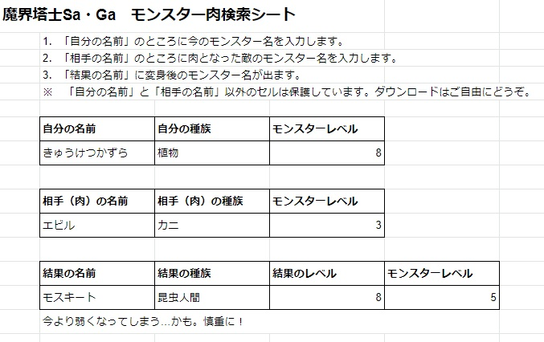
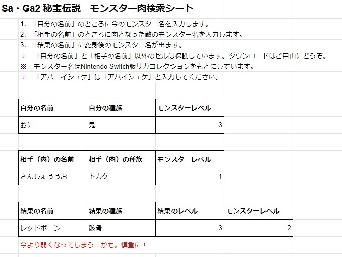
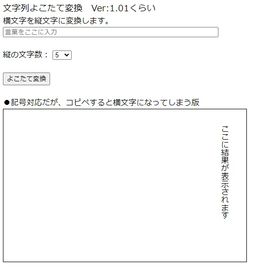
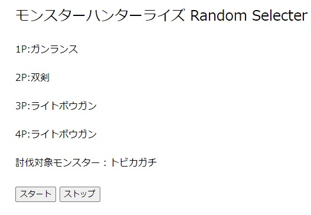

Tool
左の画像から各ページに行けます（別タブまたはウインドウが開きます）。
魔界塔士SaGa モンスター肉検索シート

|
ゲーム「魔界塔士SaGa」のモンスター変化が分かる便利ツールです。
|
SaGa2 秘宝伝説 モンスター肉検索シート

|
ゲーム「SaGa2 秘宝伝説」のモンスター変化が分かる便利ツールです。
|
文字列よこたて変換

|
横の文字を縦に置き換える便利ツールです。
|
モンスターハンターライズ Random Selecter

|
何の武器でどのモンスターに挑もうか迷った時の支援ツールです。
|